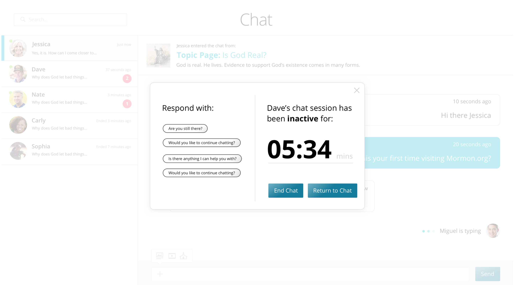

Back to Projects
Mormon.org is a site produced by the Church of Jesus Christ of Latter-day Saints that promotes and informs online visitors about the values, beliefs, and practices of Mormons. Over 2 million users visit Mormon.org each month.
During my internship at Boncom, I worked on multiple areas of the site including mobile and desktop. Redesigning the chat experience was one of the more impactful projects that I had the opportunity to work on.
Issues presented by the client included the following:
The client’s main focus was on improving chat engagement and experience.
Before brainstorming solutions, I wanted explore the product to understand it deeper and see if there were other UI/UX issues. Later, I’ll mention some issues that I discovered in the “Define” section.
I started by looking at other chat experiences on mobile & desktop to identify what seemed to work and what did not. During this review I noticed most of these chat experiences at one point or another had the following:
Due to client contraints, I conducted a few quick usability tests in the office to determine what parts of the interface cause frustation and confusion.
During the the product audit & usability tests, I found that many of the issues were UI related.
Aesthetics and Feel
Overall, the UI felt awkward and out-of-date.
Limited Screen Real Estate
Due to the bulky UI components, the interface overpowers the mobile screen.
Bring site aesthetics up to speed with current visual trends and patterns.
Use design principles such as proximity and white space to create a more simple interface.
During my internship, our team met together once a week to discuss the progress of our projects. I would present my design concepts and receive design critiques from the team. Before this time, I didn’t have much experience presenting design work. This become an opportunity to learn how to present effectively.
When presenting design work, come into meetings ready to learn with an open mind. Confidently present your designs, but humbly take feedback. Oftentimes there a new perspectives and considerations that others will share with you.
Here is some of the feedback I received from the team:
Throughout the project I continued to present my work to the team and test it in the office. As a recieved feedback, I would iterate over and over.
Solution: In an effort to decrease the response time of missionaries, we added labels on the chat message like “just now” or “11 seconds ago” instead of “2:34pm”. In Figure 1, you can see that each message is labeled by the amount of time that has passed instead of the time of day.
In Figure 2, I created a pop-up notification for missionaries after a certain amount of time has passed without their response to a chat. The pop-up includes default response questions that allow the missionary to respond as quickly as possible when they are notified of the delay. These notifications would help missionaries keep track of visitors they are chatting with and help them respond to visitors in a timely matter. Although the mock-up below says “5:34 mins,” we did not decide on a final time frame before the pop-up would display.
Solution: As a way to increase chat engagement, I designed a chat CTA that is content specific to the topic page. For example in Figure 3, this CTA would be displayed on the “How to Pray?” topic page. I did because I wanted visitors to see how chatting with missionaries would be helpful.
To help missionaries understand the context of visitors, I decided to add a notification bar to show them where visitors are entering the chat from (Figure 4).
Solution: In an attempt to increase trust in the chat experience, I added photos of the missionaries faces along with a drop-down menu that displays basic information about where they are from and what they enjoy doing. Another solution we came up with was adding the “122 people chatting now” to the content specific CTA on each topic page. We did this to add credibility through social proofing (figure 3).
Looking back on this project, I would have:
During this project, I learned:
Although I wasn’t able to see the outcomes of my work, by the end of my internship I felt that this project challenged me to design within set business goals. Below are some LinkedIn recommendations I received at the conclusion of my internship:
"Jake is a highly skilled UX designer who thinks through problems thoroughly and offers solutions that are both user-friendly and business-oriented. He is among the quickest workers I have met — capable of cranking out prototypes to illustrate his ideas. Jake’s got a bright future ahead of him."
- Tim Price Ph.D. MBA, UX Strategist @ Boncom
"Jake was one of those UX/UI intern prodigies. He is also extremely humble about it. Jake did not require a lot of handholding or catching up. As soon as he started he hit the ground running. Jake very quickly became a valuable asset. He is eager and hungry to learn as much as he can. He is in the know of the latest interaction trends and it is good at creating and maintaining a network. Jake is ahead of the game in more ways than one. I look forward to anyone that gets the privilege of working with him."
- Spencer Loveless, Senior Designer @ Boncom
Next Case Study
{kind=link}
{kind=link}
{kind=link}
{kind=link}
{kind=link}
{kind=link}
{kind=link}
{kind=link}
{kind=link}
{kind=link}
{kind=link}
{kind=link}
{kind=link}
{kind=link}